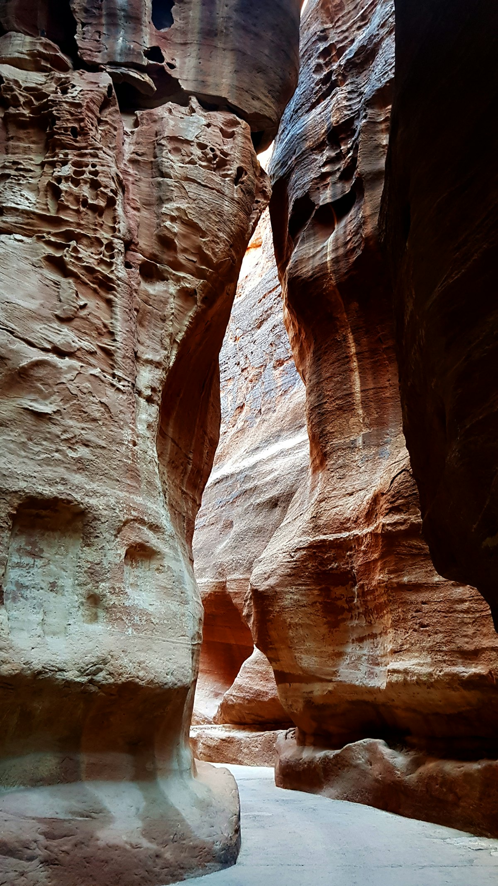
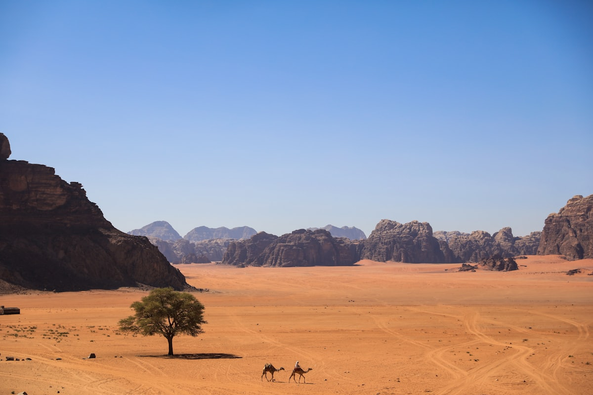
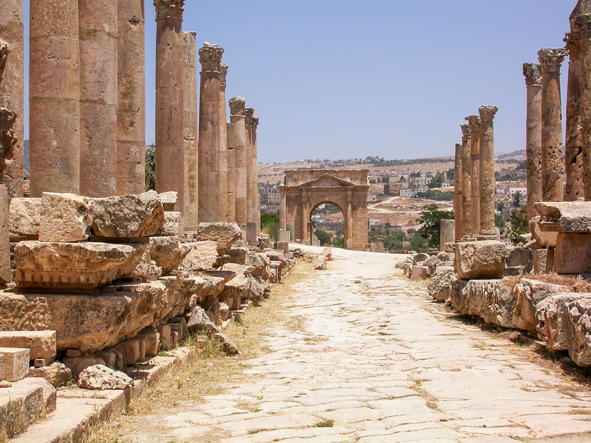
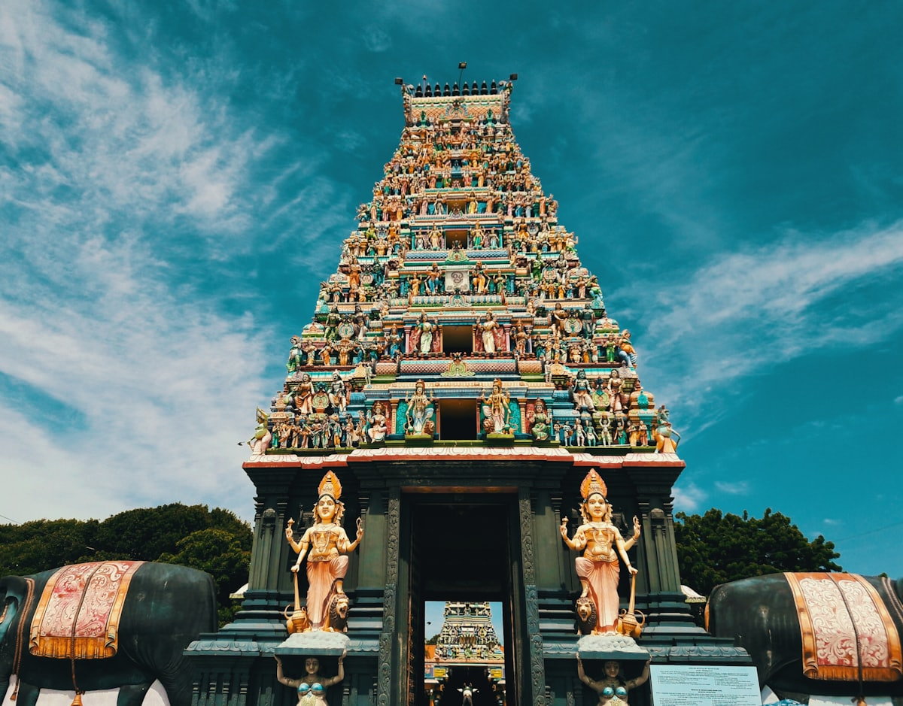
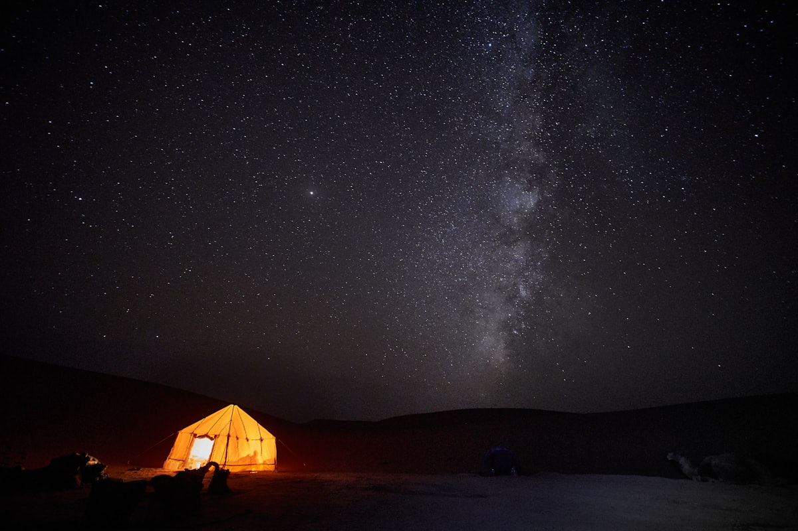
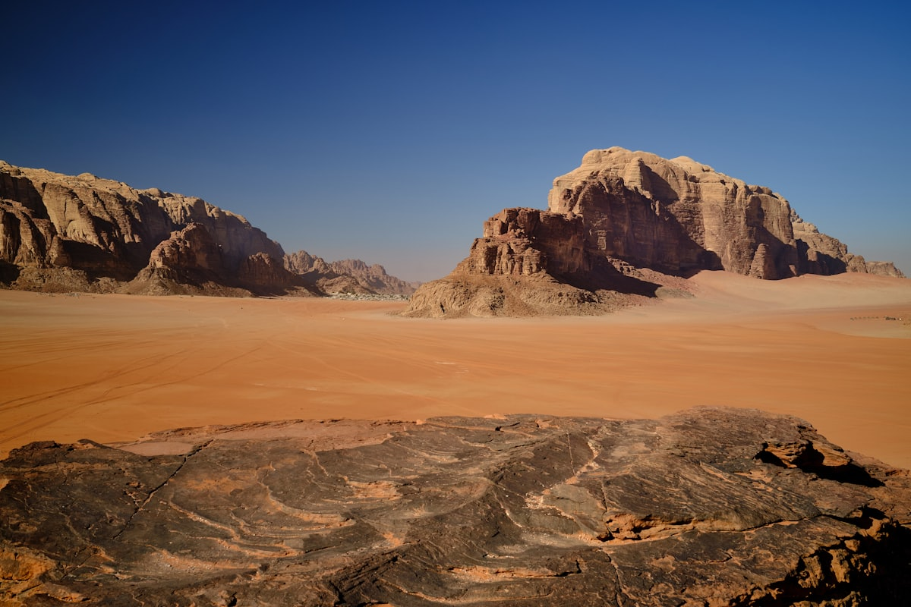

1核心结论
安曼
→
杰拉什
→
佩特拉
→
瓦迪拉姆
→
死海
→
返程
🕐 9 天怎么安排最合理
约旦是「沙漠中的文明十字路口」：安曼的千年老城、杰拉什中东最完整的罗马古城、佩特拉凿进玫瑰色岩石的纳巴泰王都、瓦迪拉姆的火星地表，以及低于海平面 400 多米的死海。9 天刚好把「古罗马 + 佩特拉 + 沙漠 + 死海」四张王牌一次打满，节奏上南部重头戏留给佩特拉 3 天，瓦迪拉姆 2 晚深入沙漠腹地。
| 事项 | 结论 |
|---|---|
| 事项 | 结论 |
| 签证（最关键） | 中国护照落地签 40 JOD（约 400 元）；提前在 jordanpass.jo 购买约旦通并住满 3 晚（4 天）可免签费，机票+酒店订单随身备查 |
| 约旦通 Jordan Pass | 分三档：Wanderer 70 / Explorer 75 / Expert 80 JOD（对应佩特拉 1/2/3 天），含 40+ 景点。本次佩特拉 3 天买 Expert 80 JOD 最划算，景点首扫激活，佩特拉之夜不包含 |
| 行程链 | 安曼（2 天）→ 杰拉什（1 天）→ 佩特拉（3 天）→ 瓦迪拉姆（2 天）→ 死海（1 天）→ 返程 |
| 预算（人均） | 经济 9000–13000 ／ 标准 16000–24000 ／ 舒适 35000–50000（人民币） |
| 三件提前事 | ① 官网买约旦通（免签费+含佩特拉）② 订瓦迪拉姆露营营地 ③ 提前 2 个月盯北京⇄安曼中转机票 |
| 季节提醒 | 3–5 月、9–11 月最舒适（20–30℃）；6–9 月佩特拉正午 40℃+，建议 6:00 入园；12–2 月凉爽干燥，瓦迪拉姆夜里可近 0℃ |
| 货币 | 1 JOD ≈ 10 元人民币；落地签只收现金（JOD/USD），机场汇率差，市区换更划算，银联/刷卡部分商家可用 |
⚠️ 两个容易忽略的点
① 约旦通必须在入境前买好：机场/口岸不卖约旦通，没买就落地签 40 JOD + 佩特拉门票另算（1 日 50 JOD）。② 佩特拉比想象中大得多：卡兹尼只是入口，修道院要爬约 800 级台阶，全程轻松走出 2 万步，1 天票根本不够，这也是本攻略给佩特拉留 3 天的原因。
2推荐行程 · 9 天版
以下为 9 天 8 晚的推荐节奏：前半程安曼+杰拉什看罗马与老城，中段 3 天深玩佩特拉，后半程瓦迪拉姆沙漠 2 晚 + 死海 1 天收尾。城市之间以 JETT 巴士与包车衔接。
| 日期 | 行程 | 过夜地 | 主题 |
|---|---|---|---|
| D1 抵安曼 | 北京✈安曼（中转约 14–20h），落地签/约旦通入境，入住市区 | 安曼 | 抵达+休整 |
| D2 | 城堡山 → 罗马剧场 → 老城市集 → 彩虹街 | 安曼 | 古城一日 |
| D3 | 杰拉什罗马遗址：哈德良门 → 椭圆广场 → 列柱大街 → 剧场 | 安曼 | 罗马古城 |
| D4 | JETT 巴士到瓦迪穆萨，下午入园：蛇道 → 卡兹尼 → 皇家陵墓 | 瓦迪穆萨 | 初见佩特拉 |
| D5 | 清晨入园 → 修道院（800 级台阶）→ 高祭坛；晚上佩特拉之夜（可选） | 瓦迪穆萨 | 佩特拉深线 |
| D6 | 晨光补拍 → 转场瓦迪拉姆，吉普车日落 + 星空露营 | 瓦迪拉姆营地 | 火星沙漠 |
| D7 | 沙漠吉普全览：劳伦斯之泉 → 天然拱门 → 沙丘 → 骆驼/徒步 | 瓦迪拉姆营地 | 沙漠全体验 |
| D8 | 离开瓦迪拉姆 → 死海：漂浮 + 泥浴 + 泳池日落 | 死海度假村 | 死海打卡 |
| D9 返程 | 晨光休整 → 返安曼购物 → 安曼✈北京（中转） | — | 收尾 |
🧭 路线可调原则
时间紧可砍掉杰拉什（D3）并入安曼半日，把佩特拉从 3 天压缩到 2 天但保留修道院；时间充裕可在瓦迪拉姆加一天热气球（约 120 JOD，季节限定）。带老人孩子建议瓦迪拉姆只住 1 晚、佩特拉全程坐电瓶车/骑驴上修道院。
3逐小时时间线
以下为 9 天全程的逐小时执行时间线，可当作「当天打开照着走」的清单。标注 ※ 的可选项视体力与天气取舍。
D1 · 抵达安曼
北京✈安曼，入境休整
🛫 抵达日
| 时间 | 事项 |
|---|---|
| 全天 | 北京✈安曼（无直飞，经多哈/迪拜/阿布扎比/伊斯坦布尔中转，全程约 14–20h）。推荐卡塔尔/阿联酋航空，行李尽量直挂 |
| 到达后 | 安曼阿丽亚王后机场（AMM）入境：持约旦通走免签通道出示二维码；无约旦通则现金付 40 JOD 落地签（备美元），办完换少量第纳尔 |
| 20:00–21:30 | 机场→市区约 35–45min（出租约 20 JOD，提前订接送机更省心），入住酒店 |
| 21:30 | 时差 −5h 无感，附近觅食后早睡，为明天蓄力 |
北京没有直飞安曼的航班，务必买「同一票号联程」避免中转国签证问题；落地签窗口只收现金，美元/第纳尔都行。
D2 · 安曼古城
城堡山 + 罗马剧场 + 老城
🏛 古城日
| 时间 | 事项 |
|---|---|
| 09:00–12:30 | 酒店早餐（约旦早餐标配：皮塔饼+胡姆斯+煎蛋+薄荷茶）→ 城堡山 Jabal al-Qal'a（约旦通含，单买约 3 JOD）：赫拉克勒斯神庙残柱、考古博物馆、俯瞰白色老城 |
| 12:30–14:00 | 老城午餐：曼萨夫 Mansaf（约旦国菜羊肉酸奶饭）或沙威玛+法拉费 |
| 14:30–16:00 | 罗马剧场（约旦通含）：建于公元 2 世纪的 6000 座露天剧场，登顶看全城 |
| 16:30–18:30 | 老城市集：哈希姆广场、蓝顶清真寺（外观）→ 彩虹街 Rainbow Street 咖啡馆+甜品，晚霞时最美 |
| 18:30 | 晚餐后回酒店休息，明天早起去杰拉什 |
安曼城区坡道多且车多，穿舒服的鞋；周五上午清真寺礼聚、部分店铺关门，尽量把老城日排在周中。
D3 · 杰拉什一日
中东最完整罗马古城
🏺 罗马日
| 时间 | 事项 |
|---|---|
| 08:00–08:45 | 安曼北站（Tabarbour）小巴/服务出租车到杰拉什（约 1 JOD，45min–1h）；或包车往返 25–35 JOD |
| 09:00–12:00 | 杰拉什古城（10 JOD，约旦通含）：哈德良门 → 椭圆广场（56 根科林斯柱围合）→ 列柱大街（1km 古罗马主干道） |
| 12:00–13:00 | 景区口午餐：约旦烤肉+皮塔 |
| 13:00–15:30 | 阿尔忒弥斯神庙 + 南北剧场（可体验现场演出音效）+ 拜占庭教堂马赛克地面 |
| 16:00–17:00 | 返安曼；时间富余可顺路加阿杰隆城堡（山顶十字军城堡，另需 20–30min） |
杰拉什 8:00 开门即去人最少、光线最好；遗址无遮阴，夏天一定带水+防晒，参观约 4h。
D4 · 初见佩特拉
安曼→瓦迪穆萨，蛇道与卡兹尼
🏜 佩特拉日
| 时间 | 事项 |
|---|---|
| 06:15–10:00 | JETT 巴士：安曼 Abdali 站 6:30 / 第七环站 7:00 发车，约 10 JOD，3.5h 直达瓦迪穆萨；到站寄存行李或先办入住，游客中心出示约旦通扫码（首扫激活） |
| 11:00–13:30 | 入园：沿蛇道 Siq（1.2km 峡谷裂隙）走到尽头——卡兹尼神殿 Al-Khazneh，玫瑰色岩壁第一眼震撼 |
| 13:30–14:30 | 卡兹尼广场午餐（自带干粮最划算，景区内餐饮贵） |
| 14:30–17:30 | 深入古城：柱廊街 → 大神庙 → 皇家陵墓（立面群最佳拍照位） |
| 18:00 | 出园回镇，瓦迪穆萨镇上晚餐（烤鸡/曼萨夫），早休息备战明天修道院 |
佩特拉 6:00 开门、18:00 关门（夏季），正午暴晒建议安排在有遮阴的蛇道时段；园区水贵，随身带 2L 水。
D5 · 修道院深线
修道院 800 级台阶 + 高祭坛
🧗 佩特拉深线
| 时间 | 事项 |
|---|---|
| 06:00–10:00 | 第一波入园，清晨空无一人的蛇道+卡兹尼，光线最佳 → 爬修道院 Ad-Deir：约 800 级凿岩台阶（往返 2–3h），山顶歇脚喝薄荷茶，俯瞰整片佩特拉谷地 |
| 10:00–11:30 | 修道院观景台拍照；体力好可加 1 JOD 登顶另两处观景 |
| 11:30–13:00 | 下山，顺路打卡 高祭坛 High Place of Sacrifice（绕道 1h，360° 山景值得）→ 午餐：瓦迪穆萨镇上烤鱼/汉堡 |
| 15:00–17:00 | 午休或补拍皇家陵墓晚光 |
| 20:30–22:00 | 佩特拉之夜（周一/三/四 20:30，17 JOD 另购）：烛光点亮卡兹尼前广场，贝都因音乐+星空，氛围绝佳 ※可选 |
修道院台阶陡峭无遮阴，务必清晨爬；佩特拉之夜需当日有效的白天票+单独购票，只开周一周三周四，旺季票提前在 PDTRA 官网买。
D6 · 转场瓦迪拉姆
晨光补拍 → 火星沙漠 → 星空露营
🏜 瓦迪拉姆日
| 时间 | 事项 |
|---|---|
| 06:00–10:00 | 早起再入园（约旦通 Expert 含 3 天），补拍蛇道晨光与彩色沙石谷；或睡懒觉整理行李，退房、镇上早餐 |
| 10:00–12:00 | 包车/拼车前往瓦迪拉姆（约 1.5–2h），可顺路逛小佩特拉 Little Petra（约旦通含） |
| 12:00–13:00 | 瓦迪拉姆游客中心：保护区门票 7 JOD（约旦通含），联系营地吉普来接 |
| 14:00–17:00 | 营地吉普接入沙漠，入住贝都因帐篷，下午沙丘漫步/岩画看日落 |
| 19:00–21:00 | 营地篝火晚餐（坑烤鸡+米饭+沙拉），围炉喝甜茶，星空银河肉眼可见 |
瓦迪拉姆营地价格约 25–60 JOD/人含早晚餐，越深入沙漠越贵；12–2 月夜里可近 0℃，抓绒+睡袋内胆必备。
D7 · 沙漠全体验
吉普巡游 + 骆驼 + 沙丘日落
🚙 沙漠日
| 时间 | 事项 |
|---|---|
| 06:00–09:00 | （可选）吉普看日出，沙漠晨光把砂岩染成金红 → 营地早餐 |
| 09:00–13:00 | 沙漠吉普 4x4 半日游（约 30–50 JOD/人）：劳伦斯之泉 → 卡扎里峡谷（岩刻+一线天）→ 天然拱门 → 红色沙丘 |
| 13:00–14:00 | 贝都因沙漠午餐（沙坑烤鸡+面饼） |
| 14:30–17:30 | 自由选项：骑骆驼（约 15 JOD/人）／徒步 布达岩拱门 ／营地躺平喝红茶 |
| 17:30–22:00 | 吉普车登沙丘看日落，火星地表+夕阳大片 → 返回营地，篝火+贝都因音乐+观星（无光害，银河清晰） |
热气球约 120 JOD/人、季节和风况双限，想坐务必提前 1–2 天跟营地约；吉普车报价按「每人」谈，砍价空间在 10–20%。
D8 · 死海漂浮
瓦迪拉姆 → 死海 → 漂浮泥浴
🌊 死海日
| 时间 | 事项 |
|---|---|
| 07:30–08:30 | 营地早餐，最后看眼沙漠晨景 |
| 09:00–12:30 | 包车前往死海（约 3–3.5h 沙漠公路，途经费南/卡拉克方向），入住死海度假村（Sweimeh 一带） |
| 13:00–14:00 | 度假村自助午餐（日票通常含） |
| 15:00–17:00 | 死海漂浮（含死海泥浴）：仰躺即浮、看报纸拍照是保留项目，黑泥涂满全身等干再冲 |
| 17:30–19:30 | 淡水冲淋（必须！）→ 泳池放松 → 死海日落（盐晶滩+远山极美）→ 度假村晚餐，早休息 |
死海日票 35–45 JOD 含度假村私人沙滩+淡水淋浴+泳池+自助餐，比公共海滩（20 JOD）体验好很多；漂浮每次 ≤20 分钟，水进眼睛立刻用淡水冲！
D9 · 返程
晨光休整 → 返安曼 → 北京
🛫 返程日
| 时间 | 事项 |
|---|---|
| 07:30–08:30 | 死海晨光，最后海边散个步 |
| 09:00–10:30 | 退房，驱车回安曼（约 1–1.5h） |
| 11:00–14:30 | 安曼市区：彩虹街咖啡馆补咖啡，老城买伴手礼——死海泥护肤品、马赛克盘、阿拉伯甜点、贝都因头巾，午餐沙威玛/烤鱼收官 |
| 15:30 | 提前 3h 到机场（安曼机场人多安检慢） |
| 17:00–次日 | 安曼✈北京（中转，约 14–20h），入境回家 |
离境税 10 JOD 一般已含在机票里；机场免税店有死海泥品牌（Ahava 等）补货，比市区贵一点但省时间。
4景点图鉴
必去（必去）/ 顺路（顺路）/ 可跳过（可跳过）。
必去
佩特拉·卡兹尼神殿 含于约旦通/门票
佩特拉名片。蛇道尽头的玫瑰色神殿，《变形金刚》取景地，晨光与烛光各美一次。

必去佩特拉·蛇道 含于约旦通/门票
1.2km 峡谷裂隙。天然水道+岩壁色带，清晨无人时最出片。

必去瓦迪拉姆沙漠 保护区 7 JOD（约旦通含）
「月亮谷」火星地表。吉普巡游+骆驼+沙丘日落，贝都因人世代家园。
 必去
必去死海 度假村日票 35–45 JOD
地球陆地最低点（−430m）。仰躺即浮+黑泥浴，人生必打卡之一。

必去杰拉什罗马遗址 10 JOD（约旦通含）
中东保存最完整的罗马古城。哈德良门+列柱大街+椭圆广场。

必去安曼·城堡山 约旦通含（单买 3 JOD）
赫拉克勒斯神庙残柱。罗马+拜占庭+阿拉伯层层叠叠，俯瞰白色老城。

顺路瓦迪拉姆·星空 含营地住宿
世界顶级暗空区。无光害银河+篝火，冬春空气最通透。

顺路瓦迪拉姆·布达岩拱门 含保护区门票
天然巨岩拱门。徒步登顶 1.5h，俯瞰月亮谷全景，体力彩蛋。
图片为 Unsplash 主题图（卡兹尼、蛇道、瓦迪拉姆、死海、杰拉什、安曼、沙漠星空等均为约旦实景），用于页面配图。更多免费/含通票景点：小佩特拉、阿杰隆城堡、马达巴马赛克地图、卡拉克城堡。
5路线地图
点击左侧节点可在地图上定位；点击地图 marker 会高亮对应节点。坐标为 WGS-84 转 GCJ-02 纠偏后标注。
6预算明细（三档）
以下为单人、不含购物的估算，人民币计价；出发地基准北京。汇率按 1 JOD ≈ 10 元人民币估算。往返机票按北京⇄安曼中转航班（无直飞）淡季 4000–6000 元计，旺季或临期会更高。
| 项目 | 经济（9000–13000） | 标准（16000–24000） | 舒适（35000–50000） |
|---|---|---|---|
| 往返机票 | 北京⇄安曼中转 4000–5000 | 含行李额/好时段 5000–7000 | 商务舱/灵活票 15000–25000 |
| 住宿（8 晚） | 民宿/青旅 150–300/晚 | 三星/四星 400–700/晚 | 度假村/精品 1500–4000/晚 |
| 交通（境内） | JETT 巴士+小巴+拼车 800–1200 | 巴士+包车少量 1800–2800 | 全程包车/司导 5000–9000 |
| 门票+活动 | 约旦通 Expert 800 + 保护区 350 | 含吉普+营地含餐 1800–2500 | 加热气球+骆驼+SPA 4500–7000 |
| 餐饮（9 天） | 街头餐+超市 900–1200 | 正常餐厅 2000–3000 | 度假村正餐+特色 6000–9000 |
💰 标准档示例账单（人均约 18000–20000 元）
往返机票 6000 + 住宿 8 晚 4200（均 525/晚）+ 境内交通 2200 + 约旦通与活动 2200 + 餐饮 2500 + 落地签杂费 600 ≈ 18000–20000 元。大头是机票与住宿；瓦迪拉姆营地含餐省下一顿饭钱，佩特拉与杰拉什门票被约旦通覆盖。提前 2 个月刷机票能省 1000–2000 元。
7备选方案
7.1 压缩版 7 天（砍杰拉什/瓦迪拉姆 1 晚）
- D1 抵安曼（同主行程）
- D2 安曼古城半日 + 杰拉什半日，当晚飞/宿安曼
- D3–D5 佩特拉 3 天（主行程核心不动）
- D6 瓦迪拉姆 1 天 1 晚（吉普日落+星空）
- D7 死海半日 → 安曼返程
7.2 亲子/轻体力版调整
佩特拉改 2 天：D4 下午入园走蛇道+卡兹尼，D5 坐电瓶车到修道院脚下再爬最后一段；瓦迪拉姆 1 晚足够。杰拉什保留（平路多、互动性强）。孩子 12 岁以下多数景点免票。死海漂浮必须大人全程看护，水进眼剧痛，备足淡水。
7.3 南部加长版（10–12 天）
在死海后加亚喀巴（红海潜水 2–3 天）或南向经卡拉克城堡+达纳自然保护区走「国王公路」到佩特拉（比沙漠公路美得多但多 1 天）；也可回安曼后往北走阿杰隆+乌姆盖斯，凑一条北部古迹线。
8交通与住宿
8.1 北京 ⇄ 约旦 交通
| 方式 | 时长 | 参考价 | 备注 |
|---|---|---|---|
| 中转航班（唯一方式） | 北京⇄安曼 全程约 14–20h | 往返 4000–6000 元（淡季） | 经多哈/迪拜/阿布扎比/伊斯坦布尔，卡塔尔/阿联酋/约旦皇家航空 |
| 联程票 | 同中转时长 | 5500–8000 元 | 务必同一票号联程，避免中转国签证问题 |
| 商务舱 | 同中转时长 | 15000–25000 元 | 长途 15h+，预算允许建议升级 |
⚠️ 约旦境内交通核心提醒
南北主线靠 JETT 巴士（安曼 Abdali 站 6:30 / 第七环 7:00 → 佩特拉 3.5h、10 JOD；佩特拉 17:00 → 瓦迪拉姆、15 JOD；瓦迪拉姆 9:00 返）与 包车衔接（安曼⇄杰拉什往返 25–35 JOD、瓦迪拉姆⇄死海包车约 60–80 美元）。没有火车，沙漠段只适合吉普或包车。旺季（3–5/9–11 月）JETT 班车票提前 1–2 天订。
8.2 约旦境内交通
- JETT 巴士：安曼—佩特拉 3.5h（10 JOD，6:30/7:00 发车、17:00 返回）；佩特拉—瓦迪拉姆 15 JOD；安曼—亚喀巴 11 JOD
- 小巴/服务出租车：安曼北站—杰拉什约 1 JOD（45min–1h），凑满即走，最接地气
- 包车/司导：全境包车约 60–90 美元/天（含油费司机），佩特拉—瓦迪拉姆—死海段最值得包
- 瓦迪拉姆内：私家车禁入保护区，营地吉普/骆驼是唯一方式，游客中心 7 JOD 门票
- 安曼市内：Careem/Uber 打车便宜，白底/黄底出租车打表，夜间出行坐正规车
- 死海往返：安曼发车约 1–1.5h，JETT 班车 10 JOD 或包车；度假村日票常含接送
8.3 住宿区域推荐
| 区域 | 价格/晚 | 优点 | 短板 |
|---|---|---|---|
| 安曼·彩虹街/市中心 | 经济 150–300 / 标准 400–700 | 老城餐厅集中，夜生活丰富 | 坡多、停车难 |
| 瓦迪穆萨（佩特拉） | 经济 100–250 / 标准 300–600 | 距景区步行可达，性价比高 | 晚上选择少 |
| 瓦迪拉姆营地 | 含餐 250–600/人 | 星空+贝都因体验，此生难忘 | 设施简单、保暖靠装备 |
| 死海度假村 | 标准 700–1200 / 舒适 1500–4000 | 私人沙滩+泳池+泥浴全含 | 贵、位置孤立 |
| 亚喀巴（南部延伸） | 经济 200–400 / 标准 500–900 | 红海潜水、海鲜便宜 | 离主线远，需额外时间 |
9美食清单
🍛 必吃经典
- 曼萨夫 Mansaf：约旦国菜，酸奶羊肉配米饭，正式场合必备
- 沙威玛 Shawarma：烤肉卷饼，街头性价比之王
- 烤羊排/烤肉串：炭火+洋葱香料，配皮塔蘸胡姆斯
- 烤鱼：亚喀巴/死海区域的海鲜，铁板整鱼
🥩 在地名物
- 瓦迪拉姆营地坑烤：沙坑埋锅烤鸡/羊肉，沙漠版叫化鸡
- 佩特拉山货：游客中心外烤玉米、甜枣
- 死海特产：矿盐/黑泥周边（送人佳品）
- 阿拉伯咖啡：豆蔻味，苦且提神，小杯续命
🥙 街头小吃
- 法拉费 Falafel + 胡姆斯 Hummus：素食友好，早餐标配
- 皮塔饼现烤：路边炉子热乎乎的最香
- 阿拉伯甜点：库纳法 Knafeh（芝士+糖丝）、芝麻酥
- 薄荷茶/甜红茶：贝都因人待客第一杯
📍 去哪吃
- 安曼彩虹街 & 老城哈希姆广场周边
- 瓦迪穆萨镇中心 Tourist Street
- 瓦迪拉姆营地（含餐，省心）
- 死海度假村自助/烤肉（日票含午餐更划算）
⚠️ 美食防坑
① 斋月白天餐厅大多不营业，穆斯林节日出行提前确认；② 水龙头水不可直饮，全程买瓶装水（约 0.5 JOD）；③ 沙拉生菜确认洗净再吃，肠胃弱的人避开路边冰饮；④ 景区内餐饮贵一倍，赶路日提前备干粮；⑤ 小费非强制，但服务好时给 1–2 JOD 或整数抹零更受欢迎。
10出行贴士
10.1 行前清单
- 护照（有效期 6 个月以上）+ 返程机票行程单
- 约旦通 Jordan Pass（入境前官网 jordanpass.jo 购，打印+手机双备份）
- 美元现金（落地签备用）+ 少量人民币/银联卡
- 转换插头（230V C/D/F/G 型，中国两脚插头需转接）
- 防晒霜+遮阳帽+墨镜（沙漠紫外线极强）
- 徒步鞋+魔术头巾（佩特拉石阶+沙漠沙尘）
- 抓绒衣/薄羽绒（瓦迪拉姆冬夜近 0℃）
- 下载离线地图 + WhatsApp（订营地和司导全靠它）
10.2 防踩坑
🧳 四条提醒
① 约旦通是省钱核心：机票订好后立刻买，激活后不能改档，佩特拉 3 天必须对应 Expert 档；② 佩特拉夏天极热：正午 40℃+，坚持「6 点入园、午后休息、傍晚补拍」节奏；③ 死海水入眼是剧痛体验，漂浮全程侧脸朝上、备足淡水，泡澡别超过 20 分钟；④ 中东地区旅游是安全的，但去南部边境（伊拉克/叙利亚方向）一律不去，晚上安曼老城保持基本警惕即可。
🌟 一句话总结
约旦把古罗马、纳巴泰王朝、沙漠与死海浓缩进一国之境——杰拉什的石柱大道、佩特拉从蛇道尽头显现的玫瑰色神殿、瓦迪拉姆星空下的篝火，再到死海上的轻松漂浮，9 天像翻开一本「活着的文明史」。一张约旦通解决签证与门票，JETT 巴士+包车串起全程，预算在阿拉伯国家中属中等，是中东旅行的最佳入门。